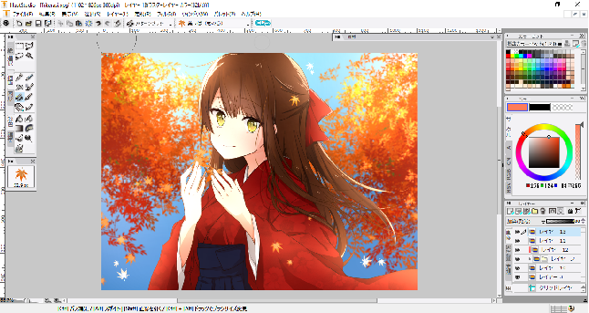

☆My Hobby☆
趣味のページへようこそ！
こちらでは管理人の趣味のイラストを紹介したいと思います。
下書き
今回は「もみじ」をテーマに描きたいと思います。
ソフトはIllustStudioを使います！古くてもう売ってないみたいです！(え)
ちなみにこのサイトの背景もこれを使って描いてみました。
まずは思い浮かんだ構図をざっと下描きします。
線画
次に下描きから線画を起こします。
線と構図の修正をしながらなるべく丁寧に描きます。
ここで丁寧に描いておくと色塗りが楽になります！
線画は下描きのレイヤーの上に新しいレイヤーを作って上からなぞるように描きます。
線画ができたら下の下描きレイヤーは非アクティブにします。
色塗り１
私は厚塗りができないので、ベタ塗りします。(笑)
塗り残しがないように気を付けながらバケツでばばっと着色します。
このときパーツごとにレイヤーを分けます。
肌、髪、目、服、服、服、小物、みたいな感じです。
たまにめんどくさいときは分けずにやってしまいますがこの後塗りづらくなります(´Д｀)
色塗り２
一番楽しい作業です！グラデーションや影を付けます。
パーツのレイヤーの上に新しいレイヤーを作り、下のレイヤーでクリッピングして描きます。
めんどくさいときはパーツレイヤーを透明部分をロックして直接書き込んでしまいますが
分けた方が細かいグラデーションを付けることができます！
今回は通常、乗算、ソフトライト、加算(発光)レイヤーで光と影を付けました。
色塗り３
線画の色を周りの色に合わせて塗ります。
線画に色を付けることでよりふわっとした感じになります。
逆に目立つ色で塗るとスタイリッシュな感じにもなります。
髪の毛の線は少し薄くするときれいになる気がします。
線画レイヤーの透明部分をロックしてそのまま塗ります。
これで女の子は完成です！
レイヤーがどんなかんじかも表示させてみます
(クリックで拡大できます↓)
{kind=link}
背景
てきとうに背景を描きます。
背景描くのは苦手なのでフリー背景素材をはりつけて完成・・・としたいところですが
今回は全部自作で行きたいと思います＿( _´ω`)_
空を青く塗ってから葉っぱブラシでどばばっと木っぽいものをかき、
フィルタからぼかしを選んで強ぼかしでぼかします。(なんかくどい(笑）)
ぼかすとちょっと遠くにある感でますよね(てきとう)
上の方に太陽光っぽく光を入れます。覆い焼きか加算(発光)レイヤーを使います。
仕上げ
最後に紅葉を散らして、加算(発光)レイヤーで光を付けて完成です！
フィルタからRBGバランスを調節したり明るさやコントラストを調節したりできます。
加工するとなかなかきれいになったりします！

こんな感じで完成しました☆
絵を描くのは小学生の頃からの趣味だったので、ずいぶん長いこと描き続けています
自分のイラストを使ってRPGなどのゲームを作るのが夢です！
最近は作曲も興味があってちまちま作ってます。
デジタルで何でもできてしまうので便利な世の中ですね！
デジタル万歳！！
トップページへ
(c) 2017 wasabina